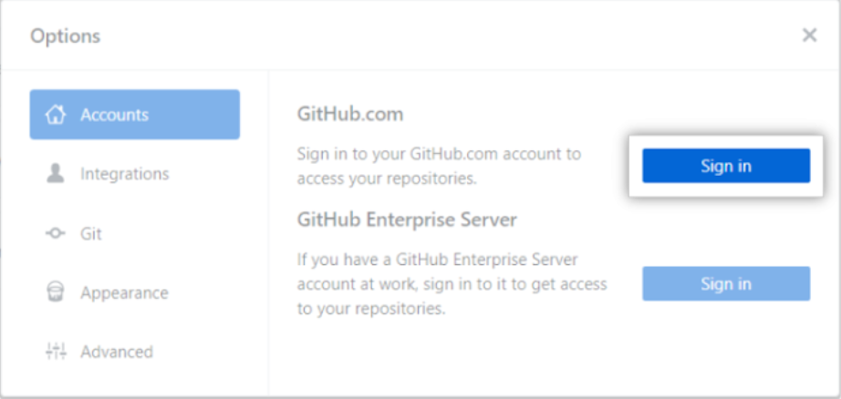

GITHUB
DESKRIBAPENA
GitHub kode-bertsioen proiektuak kudeatzeko eta kontrolatzeko sistema bat da, garatzaileentzat diseinatuta dago eta sare sozial plataforma bat da be.
Baina zertarako erabiltzen da GitHub? Beno, oro har, mundu osoko beste pertsona batzuekin elkarlanean aritzeko, proiektuak planifikatzeko eta lanaren jarraipena egiteko aukera ematen du.
KONTU BAT EGIN ETA GITHUB-a BINKULATU
Lehenengo kontu bat sortu behar duzu GitHub-ean: https://github.com/.
Kontu bat sortu ondoren, github desktop instalatu behar duzu https://desktop.github.com/.
Instalazioa amaitu ondoren, aplikazioa zabaldu eta binkulatu behar duzu kontua. Option lekuan klikatuz.

LEHEN PAUSUAK github-ean
- Sortu, errepositorio berriak gehituz:
- Errepositorio berri bat sortu dezakezu file botoian klikatuz eta ondoren, errepositorio berria sortu botoian sakatuz.
- Dagoeneko sortuta dagoen proiektu batekin lan egiteko:
- Errepositorioa klonatu beharko duzu, file botoian sakatuz, eta ondoren clone repository-n klik eginez.